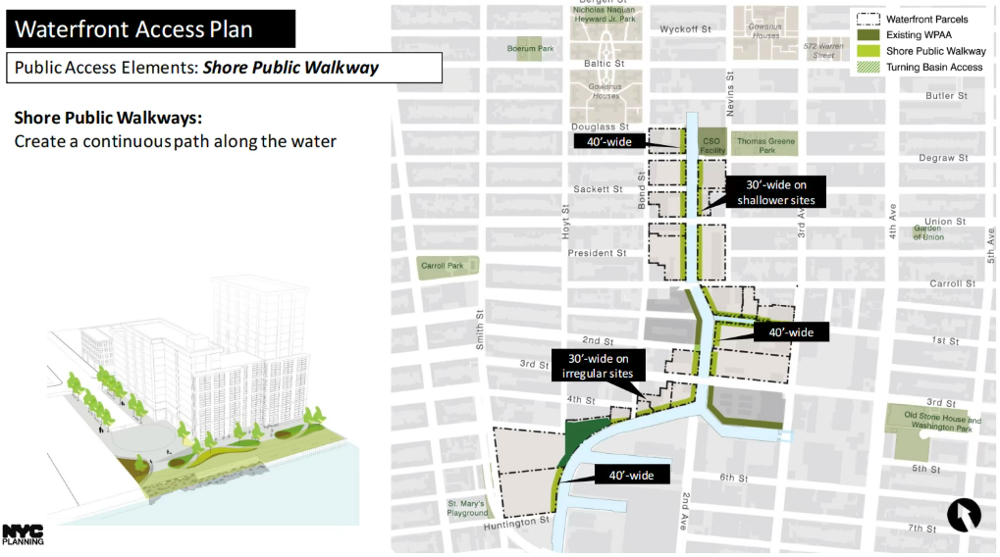

A Canal of Streets, People & Cars
A unified, inclusive waterfront that works as everyday public space, not just as the edge of new development. A canal that is clean, accessible, visible, and welcoming to old and new residents, workers, and visitors alike.
The Streets of Gowanus
The rezoning envisions Gowanus as a more pedestrian-friendly neighborhood. A central goal is a continuous public walkway along the canal — converting stretches of car-dominated street frontage into green, accessible waterfront space.

NYC Department of City Planning — Gowanus waterfront access plan
The People of Gowanus
The rezoning brings together four distinct communities, each with different relationships to the neighborhood's streets and parking.

The Cars of Gowanus
Based on the Gowanus rezoning environmental report (NYC FEIS), curbside parking demand is rising while supply remains constrained. Gowanus already has just over 2,000 on-street spaces, with midday occupancy around 90%, and FEIS projections show only about 1,940 on-street spaces by 2035 as growth continues. That leaves very limited buffer in the street system, increasing the risk of overflow without a clear absorption strategy for new demand.


No comments yet.